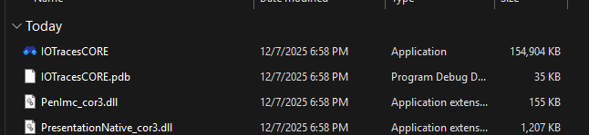
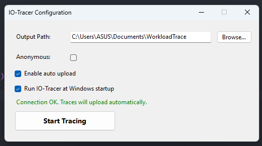

Quick Start Guide | Windows
Installation
🎥 Here’s a quick video guide on Tracer installation
-
Download
winiotracer.zipfrom here and extract it. -
Then, find
IOTracesCORE.exe, then open it. -
Installation complete!

⚠️ IMPORTANT: It's possible that your system flagged our tool as suspicious software. Bypass it by choosing "keep anyway" option whenever possible. This is because the app is not signed with a developer certificate.
⚠️ IMPORTANT: Here is your prolific submission code, "CKXDRTBX"
Basic Usage
Program starts running
Once started, you’ll be prompted to several options.
| Options | Description |
|---|---|
| Anonymous | if you want to hide some potentially sensitive data. |
| Enable Automatic Upload | if you want the trace to automatically upload to our infrastructure. |
| Start on startup | if you want the program to automatically run every boot |
If you're comfortable with your choice, hit the run button.

The program is currently active running in the background. You can check its status by right clicking tray icon.

The status displays the Computer ID, Active Session, and File Events Collected.

⚠️ IMPORTANT: The active session counter only begins when I/O-intensive activity occurs. If the device remains idle, no session time is recorded.
Exiting the program
Click the Exit option from the tray icon. A dialog will appear asking you to wait while the program performs cleanup. When the dialog closes, the program has shut down cleanly.
Check the output
If you close the program properly, results will be saved inside the output path you have set!

⚠️ Important:
We recommend exiting the program before shutting down to ensure all data is saved correctly.